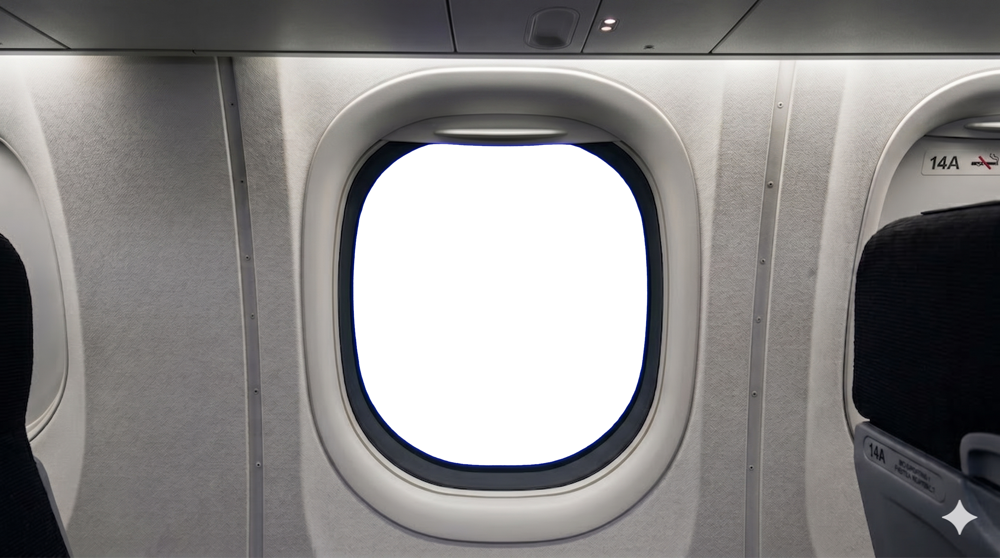
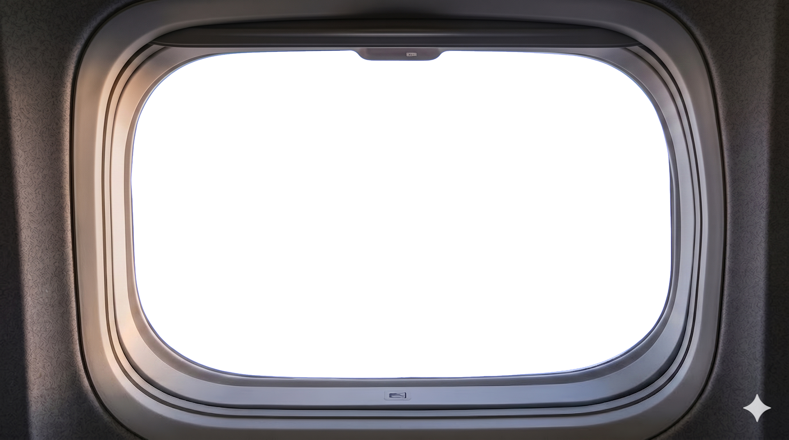

这篇是 aogl.cn 归档的第 12 篇原创手记，素材在 original/sky-plane/。我做的是一组「客机舷窗 + 万米云海」的视觉实验：先锁定现代窄体/宽体客舱的窗框、壁板与座椅轮廓（含 14A 窗位标识与舷窗底缘控制键），再把一张金色时刻的云海全景嵌进玻璃区域，最后导出两段 MP4 检查曝光过渡是否像真的在巡航高度看出去。不是某航司宣传片，也不教剪辑软件按钮；只记文件分工、合成边界和与站内 高铁车窗 Demo 的差异。
文件夹里有什么
plane1.png— 客舱侧视：整窗 + 右侧壁板「14A」、禁烟标识、前排椅背边缘；窗玻璃为纯黑占位，底缘有舷窗遮光/电致变色控制键造型plane2.png— 舷窗近景：多层圆角窗框、纹理壁板，同样黑场玻璃，适合裁切特写或竖版封面sky.png— 外景板：日出/日落色温下的云海 + 砧状积雨云，远景淡蓝、近云暖金与淡紫阴影sky-plane-video.mp4— 主成片（内景 + 外景合成录屏）sky-video2.mp4— 第二轮导出，对比窗框边缘与色温
正文与图注自然覆盖 airplane window view、above the clouds、cabin window composite、passenger POV aerial 等检索意图，均对应真实文件名。
为什么做「飞机窗」而不是只放一张航拍云图
单张 sky.png 已经具备壁纸级构图：云海绵延、右侧地平线暖光、左侧高耸砧状云柱。但缺少机舱画框时，观众只会把它归类为「风景摄影」；加上 plane1.png 的窗框与座椅，叙事立刻变成旅行者在 14A 看出去——和 高铁车窗（固定轨道、水平运动模糊）形成对照：飞机窗更强调垂直高度与平流层视野，外景板不需要近景拖影，而是整体缓移或轻微视差即可。
黑窗模板阶段的意义，是把「可替换区域」钉死在玻璃多边形内，避免云海贴图盖住壁板 rivet 纹理或 14A 字标——否则透视会穿帮。
内景模板 plane1.png：窗位与细节
plane1.png 我选择的是经济舱窗位侧视：窗在画面中轴，右侧可见座椅与壁板编号。窗框多层塑料/复合材料倒角、顶部的阅读灯与出风口边缘，都在提醒这是封闭客舱而非航拍无人机视角。玻璃全黑时，读者应理解这是合成入口，不是「夜间外面什么都没有」的纪实照片。
底缘小矩形键暗示现代客机电子遮光（类似波音 787 电致变色窗的交互位置）——本站不做型号考证，只作视觉符号；若你 fork 做航模科普，应自行核对机型与 UI。

plane1.png — 客舱侧视模板；玻璃区为外景合成入口。近景窗框 plane2.png
plane2.png 裁掉座椅叙事，只保留舷窗机械结构：圆角双层框、壁板织物纹理、底部控制键。适合社媒竖图、文章内第二图，或作为 sky-video2.mp4 的 poster——让观众看到「同一航班，两种取景」。

plane2.png — 窗框特写，同样保留黑场玻璃。外景板 sky.png：云海与黄金时刻
外景是一张横向宽幅高空摄影风格图：前景乳白碎云，中景云浪起伏，左侧砧状云体耸立，右侧地平线附近暖橙色渐亮。没有机翼入画，方便你把任意舷窗模板贴在上面而不必擦除翼尖。色温偏暖，合成时要把客舱内冷灰壁板与外景暖光分开调色——我常在窗外略提饱和，舱内保持低对比，模拟人眼适应强光后的观感。

sky.png — 云海外景定稿，用于嵌入舷窗玻璃区域。主视频 sky-plane-video.mp4
静帧能展示构图，视频则检验窗框边缘是否闪烁、云层移动是否与「巡航速度」心理预期一致。主片 sky-plane-video.mp4 把 plane1（或 plane2）与 sky.png 的时间轴运动绑在一起；建议用播放器暂停在进出云层高光处，检查玻璃反射是否过亮。
sky-plane-video.mp4 — 主合成录屏。迭代 sky-video2.mp4
第二段 sky-video2.mp4 保留在目录里作导出对照：可能换了窗模板（近景 vs 侧视）、或调整了外景色温曲线。我不把它标成「最终交付」，只作私人验收链——与 role-girl 三段 MP4 试错 同一习惯。
sky-video2.mp4 — 第二轮：窗框/色温微调。和高铁窗景、360° 全景的边界
in-car-view 用近景运动模糊草地与雪山，强调轨道速度；本篇 sky-plane 外景是缓变云海，更接近巡航高度的「悬浮感」。公寓 360° 是室内 equirectangular；major-planets8 是行星贴图——三者都不要与飞机窗混成一条产品线。首页轮播并列展示，方便访客按兴趣点选。
我刻意没做的事
素材不是某航空公司座舱实拍授权图；没有航班号、航线图或 ADS-B 数据；不声称 14A 对应真实座椅图。云海为视觉创作/图库风格，不能当作气象观测记录。商用航空广告需自备适航与商标授权。
若你要复用 sky-plane 结构
- 导出玻璃区留黑的舱内模板（
plane1/plane2），单独保存横向sky.png外景。 - 对齐窗框透视，外景亮度高于舱内；注意窗框内侧微反射，避免「贴纸感」。
- 主 MP4 + 一条 iteration 存档，并写一篇 800 字以上手记（即本文）——利于 SEO 与「有价值内容」审核。
部署时保持 original/sky-plane/ 与文章相对路径不变，GitHub Pages 与本地 WAMP 可共用链接。